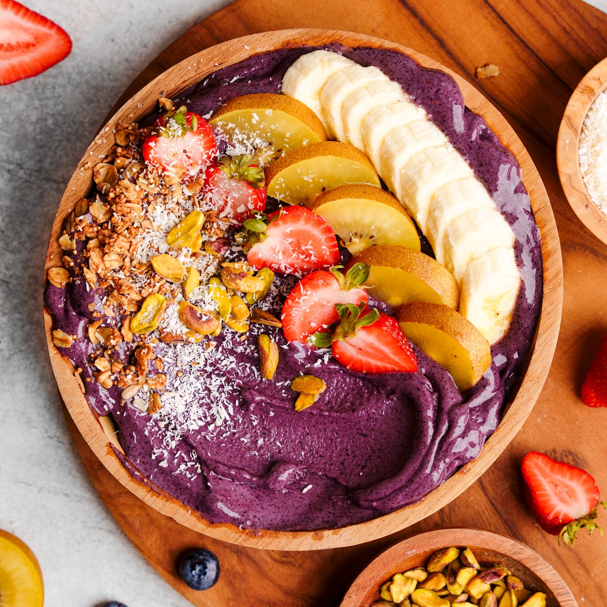
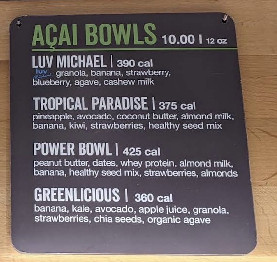
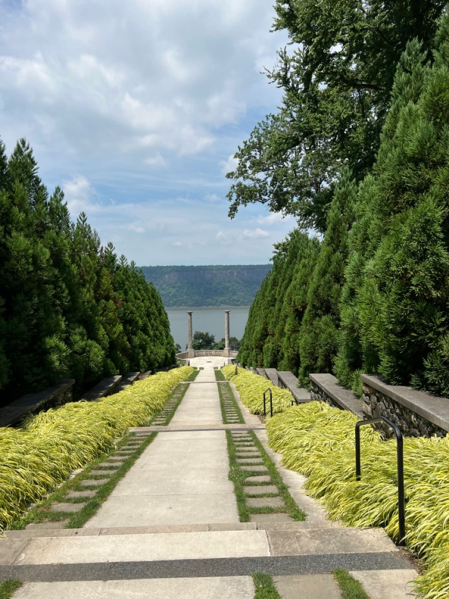
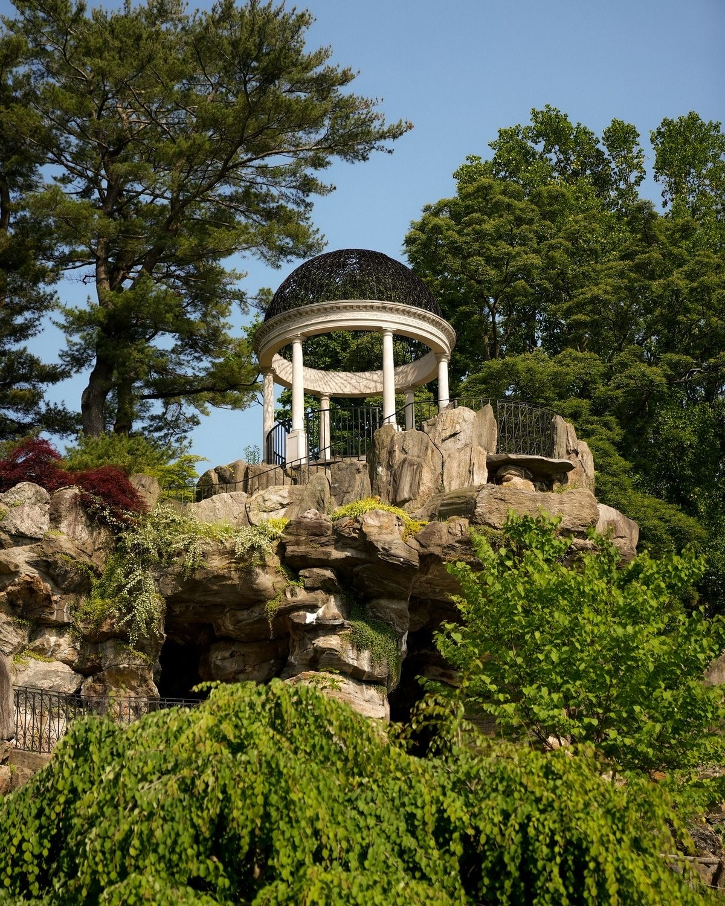
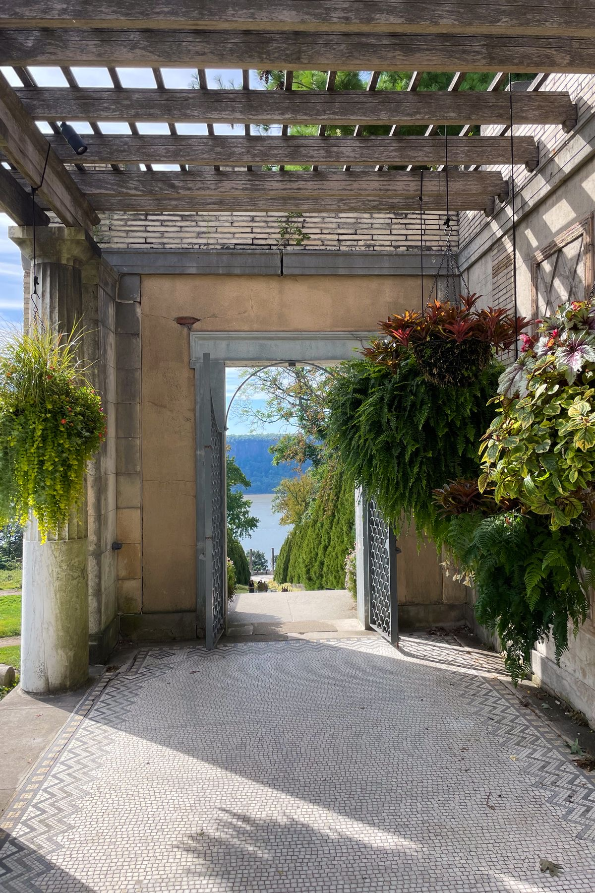
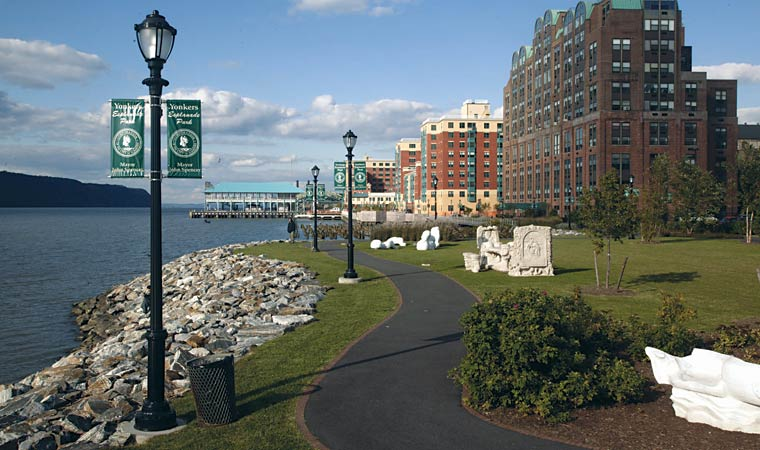
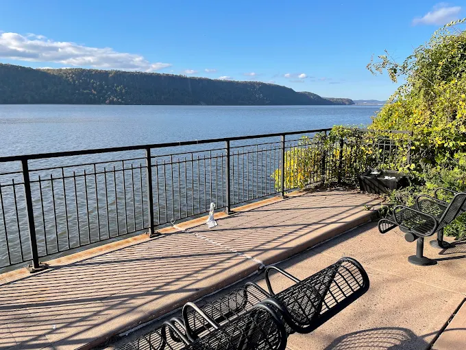

Segunda · 21 de setembroYonkers: Encontro com a Yadira
~US$ 68- 1Encontro com a Yadira · LGA
- 2Açaí · SoBol & Fresh&Co
- 3Untermyer Gardens
- 4Yonkers Waterfront & Esplanade Park
Roteiro
-
Yonkers → LaGuardia
8h30Rota mais barata pro aeroporto: ônibus até o metrô, metrô até a Columbia University, e o M60-SBS — o expresso que vai direto até o Terminal B do LaGuardia.
Bee-Line 1👣 Conecta direto com o metrô1👣 Subam à rua pro ponto do M60M60-SBS💰 US$ 3 por pessoa — conta como 1 tap só, a viagem inteira dentro da janela de 2h.
-
Encontro com a Yadira
10h30Pouso dela no Terminal B. Esperem na área de desembarque com folga — voo internacional... não, doméstico, mas sempre bom ter 15–20 min de gordura.
-
Escolha do caminho até Yonkers
11h00Se a Yadira topar uma parada em Manhattan (Times Square ou Central Park, o que ela preferir): M60-SBS + metrô até lá, um giro rápido, depois metrô até a Grand Central e Metro-North até Greystone.
Se preferirem ir direto pro Yonkers: M60-SBS até a E 125 St com Park Ave, e ali mesmo — sem precisar descer até a Grand Central — embarcam no Metro-North Hudson Line, via a estação de Harlem–125 St, direto até Greystone.
💰 Opção com parada em Manhattan: +1 tap de metrô (~US$ 6 pro casal) e mais o Metro-North de Grand Central. Opção direta: só o Metro-North de 125 St, sem tap extra.
-
Metro-North até Greystone
12h15De 125 St ou de Grand Central, dependendo do caminho escolhido. ~35–45 min até Greystone.
-
Greystone → hotel da Yadira
13h00O Courtyard fica na Executive Blvd, um pouco afastado da estação — não é o mesmo lado do rio do Airbnb. Lyft/Uber é o mais prático.
💰 Lyft/Uber ~US$ 10. Caminhando: ~3,2 km, uns 40 min — só se topar esticar a perna.
-
Check-in da Yadira
13h30Ela guarda as coisas, respira, tira o voo do corpo.
-
Almoço perto do hotel da Yadira
14h15Depois do check-in, hora de comer alguma coisa — a região do Courtyard não tem muita opção a pé, então um Uber curto resolve.
-
Açaí · SoBol & Fresh&Co
14h30

SoBol (2353 Central Park Ave) pra um açaí bowl, ou Fresh&Co (1086 N Broadway) pra salada/bowl fresco — os dois a um Uber curto do Courtyard.
💰 ~US$ 12–15 por pessoa nos dois. Um Lyft/Uber de ida resolve, ~US$ 8–10.
-
Untermyer Gardens
16h00


Storytelling
🇺🇸 English
Samuel Untermyer, one of New York's most powerful lawyers, bought the property in 1899 and hired William Welles Bosworth — the same landscape architect behind Kykuit, the Rockefeller estate — to design a garden inspired by Persian, Greek, and Italian references. The heart of the place is the Walled Garden, a classic "chahar bagh": four quadrants divided by water canals that meet in a central pool, the same layout described as paradise in ancient Persian gardens. Two sphinxes guard the entrance.
At its peak, between the 1910s and 1930s, many contemporaries considered it the most spectacular garden in the United States — Untermyer threw grand parties there, with hundreds of guests. The complex includes the Temple of Love (a columned gazebo overlooking the Hudson), an amphitheater carved into the hillside, and a rock garden. The original 1947 fountain that stood here was removed decades later and now sits in the Conservatory Garden inside Central Park — anyone who's visited there has unknowingly already seen a piece of Untermyer.
After Untermyer's death in 1940, the property was donated to the city and spent decades in near-total abandonment — vandalism, overgrowth, dry fountains. Only starting in 2011, when the Untermyer Gardens Conservancy (a local nonprofit) took over the restoration, did the garden come back to life. Today it's free, volunteer-maintained, and one of the most beautiful, least-known gardens in the country — most New Yorkers have never even heard of it.
🇧🇷 Português
Samuel Untermyer, um dos advogados mais poderosos de Nova York, comprou a propriedade em 1899 e contratou William Welles Bosworth — o mesmo arquiteto paisagista por trás de Kykuit, a propriedade dos Rockefeller — pra desenhar um jardim inspirado em referências persas, gregas e italianas. O coração do lugar é o Jardim Amuralhado, um "chahar bagh" clássico: quatro quadrantes divididos por canais de água que se encontram numa piscina central, o mesmo esquema descrito como paraíso nos jardins persas antigos. Duas esfinges guardam a entrada.
No auge, entre os anos 1910 e 1930, era considerado por muitos contemporâneos o jardim mais espetacular dos Estados Unidos — Untermyer dava festas grandiosas ali, com centenas de convidados. O complexo inclui o Templo do Amor (um gazebo de colunas com vista pro Hudson), um anfiteatro esculpido na encosta e um jardim de pedras. A fonte original de 1947 que ficava aqui foi removida décadas depois e hoje está no Conservatory Garden, dentro do Central Park — quem já visitou lá, sem saber, já viu um pedaço do Untermyer.
Depois da morte de Untermyer em 1940, a propriedade foi doada à cidade e passou décadas em abandono quase total — vandalismo, mato tomando conta, fontes secas. Só a partir de 2011, quando a Untermyer Gardens Conservancy (uma ONG local) assumiu a restauração, o jardim voltou a ficar de pé. Hoje é gratuito, mantido por voluntários, e um dos jardins mais bonitos e menos conhecidos do país — a maioria dos nova-iorquinos nunca ouviu falar dele.
945 N Broadway. Jardim persa murado com colunatas, espelhos d'água e um mirante sobre o Hudson. Entrada gratuita.
📸 É provavelmente o lugar mais fotogênico de Yonkers e quase ninguém de fora conhece. Confirmem o horário do dia no site.
-
👣 ônibus local ou app até a orla
-
Yonkers Waterfront & Esplanade Park
19h00

Storytelling
🇺🇸 English
The very name Yonkers comes from a single man: Adriaen van der Donck, a Dutch lawyer who in 1646 received a land grant of nearly 25,000 acres in this region, stretching from the Spuyten Duyvil River well beyond where the city sits today. Van der Donck held the honorary title "Jonkheer" (roughly "young lord" in Dutch) — and that nickname, "The Younckers," slowly morphed over the centuries into "Yonkers." He built farms and mills right at the confluence of the Hudson River and the Nepperhan River, exactly where this stretch of waterfront sits today.
The park named after him, Van der Donck Park, is recent — part of a revitalization project that daylighted a stretch of the Nepperhan River that had spent decades buried under parking lots and concrete. Today it's the city's go-to late-afternoon spot: people jogging, families with kids, benches facing the river — the kind of quiet esplanade most New York tourists never see, simply because it's outside Manhattan.
🇧🇷 Português
O próprio nome de Yonkers vem de um único homem: Adriaen van der Donck, advogado holandês que em 1646 recebeu uma concessão de terra de quase 10 mil hectares dessa região, indo do Rio Spuyten Duyvil até bem além de onde a cidade fica hoje. Van der Donck carregava o título honorífico de "Jonkheer" (algo como "jovem senhor" em holandês) — e foi esse apelido, "The Younckers", que ao longo dos séculos foi virando "Yonkers". Ele montou fazendas e moinhos bem na confluência entre o Rio Hudson e o Rio Nepperhan, exatamente onde fica esse trecho de orla hoje.
O parque que leva o nome dele, Van der Donck Park, é recente — parte de um projeto de revitalização que reabriu ao ar livre um trecho do Nepperhan que passou décadas enterrado embaixo de estacionamento e concreto. Hoje é o point de fim de tarde da cidade: gente correndo, família com criança, banco de frente pro rio — o tipo de esplanada tranquila que a maioria dos turistas de Nova York nunca chega a ver, porque fica fora de Manhattan.
Van der Donck Park e a esplanada à beira do rio, já com as luzes da noite começando a acender.
-
Jantar na região da Main St
20h00Restaurantes e opções de mercado ali pertinho da orla, na Main St de Yonkers — fechando o primeiro dia inteiro com a Yadira com calma, sem pressa pra voltar.
-
Volta pros hotéis · Uber/Lyft
21h15Um carro só: deixam a Yadira primeiro no Courtyard (Executive Blvd) e seguem pro Airbnb em Arthur Place.
Estimativa de Gastos
| Item | Por pessoa |
|---|---|
| 1Ônibus + metrô + M60-SBS — Yonkers até LaGuardia | US$ 3 |
| 2Metrô — LaGuardia até Times Square (se optarem por essa rota) | US$ 3 |
| Metro-North — 125 St ou Grand Central até Greystone | ~US$ 9 |
| Lyft/Uber — Greystone até o hotel da Yadira | ~US$ 5 |
| Almoço/lanche — SoBol ou Fresh&Co | ~US$ 20 |
| Jantar na Main St, Yonkers | ~US$ 20 |
| Lyft/Uber — volta pros hotéis | ~US$ 8 |
| Total do dia | ~US$ 68 |